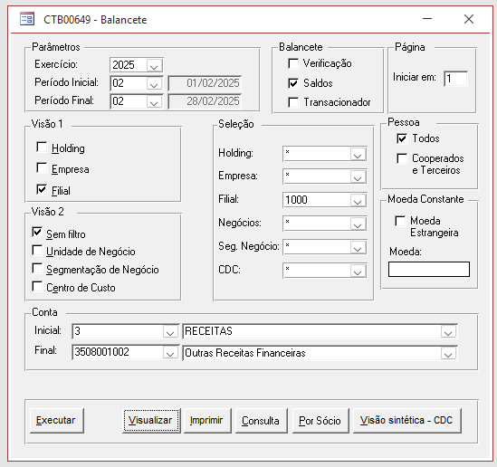

- Abrir o site do IBGE
- Pegar o usuário e senha no arquivo OneDrive - CENTRAIS DE ABASTECIMENTO DE CAMPINAS SA\Contabilidade\Obrigações Acessórias\IBGE\Senha.txt
- Logar no site
- Rolar até o fim da tela e clicar em Prosseguir
- Tirar o balancete do mês anterior (Relatórios -> Balancete) conforme o print abaixo:
- OBS: é bom também tirar o balance do mês anterior ao anterior pois caso tenha havido alguma alteração, o IBGE ainda permite atualizar esse valor. Se verificar que o valor do mês anterior ao anterior mudou, atualize-o!
- Use o valor da linha 3.10.10 RECEITAS OPERACIONAIS e insira-o na linha correspondente no site do IBGE
- Clique em Concluir
- Gere o PDF da página de confirmação e salve-o no diretório OneDrive - CENTRAIS DE ABASTECIMENTO DE CAMPINAS SA\Contabilidade\Obrigações Acessórias\IBGE\2026
